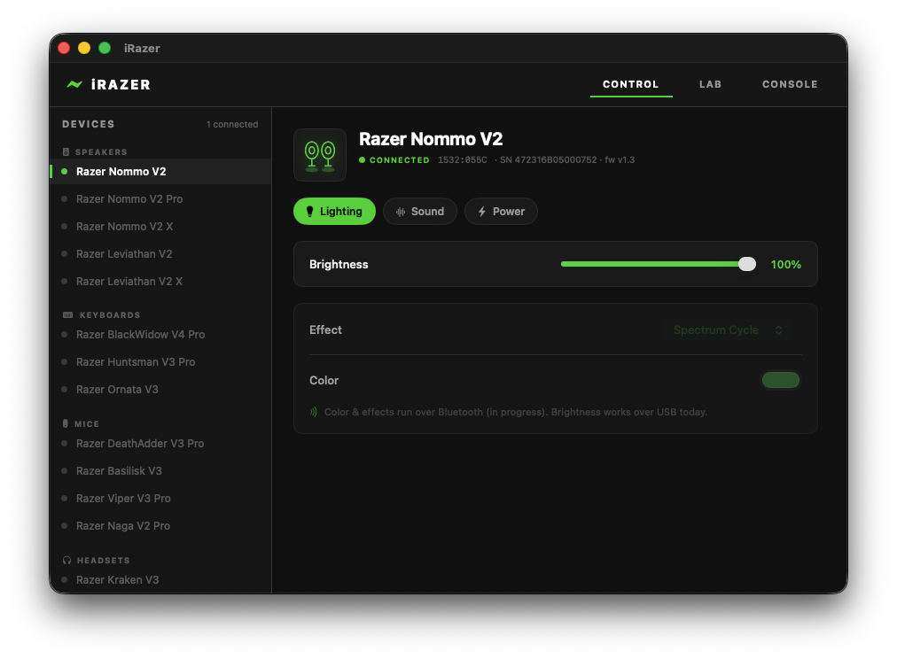

iRazer is a free, open-source native macOS app to control Razer devices — RGB, EQ, volume, brightness & power — without Razer Synapse. Apple Silicon & Intel. First device: the Razer Nommo V2.

Native, direct-to-hardware control over USB and Bluetooth. No proprietary software required.
Talks to Razer hardware directly — no Razer account, no background service, no Windows.
A modern SwiftUI app built for M1/M2/M3/M4 (and Intel). Runs entirely in userspace.
Brightness, 10-band EQ & presets, master volume — with RGB effects on the way.
Lives in the menu bar with quick controls. Close the window; it stays resident.
MIT-licensed, no telemetry. Inspect it, build it, extend it, ship a device.
See all your Razer gear in one place — connected or not — like a real Synapse.
The Razer Nommo V2 is fully supported today. More devices are on the roadmap — contributions welcome.
No — Razer does not make Synapse for macOS. iRazer is a free, open-source alternative that controls Razer devices natively on macOS.
Install iRazer, plug the Nommo V2 in over USB, and open the app: brightness, 10-band EQ, presets, master volume, and keep-awake work today; RGB over Bluetooth is in progress.
Yes — MIT-licensed and open source, with no account, subscription, or telemetry.
No. It talks to the hardware directly over USB HID and Bluetooth LE.
macOS 14+ on Apple Silicon (M1/M2/M3/M4) and Intel.
It runs entirely in userspace — no kernel extension, no root. It only talks to Razer devices you plug in.